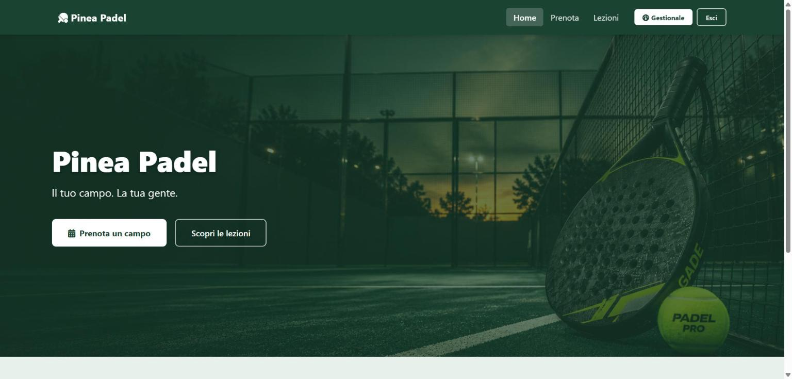
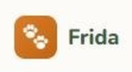
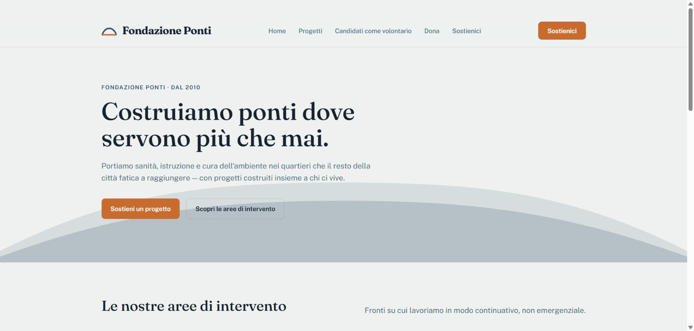

Siti vetrina & landing
Un sito veloce, chiaro e curato nei dettagli: la prima impressione che oggi si forma in pochi secondi, anche su mobile.
<sviluppatrice web /> · Sicilia
Sviluppo siti, gestionali e strumenti su misura per attività locali: chiari, veloci e curati nei dettagli, senza stravolgere quello che ti ha fatto conoscere.
passa il mouse su uno spicchio
Un sito veloce, chiaro e curato nei dettagli: la prima impressione che oggi si forma in pochi secondi, anche su mobile.
Applicazioni pensate sul tuo flusso di lavoro reale: prenotazioni, anagrafiche, gestione interna. Niente funzioni che non userai mai.
Il sito non finisce alla consegna. Aggiornamenti, piccole modifiche e nuove funzionalità quando la tua attività cresce.

Sistema di prenotazione per un centro sportivo: calendario disponibilità, gestione utenti e prenotazioni in tempo reale. Il progetto che mi ha aperto la porta della collaborazione con Talentform/ATON.
Vedi il progetto →
Anagrafica animali e dati clinici per il rifugio LIDA Catania. In arrivo promemoria vaccinazioni e storico trattamenti.
Vedi il progetto →
Sito vetrina per la Fondazione Ponti, organizzazione fittizia creata per allenarmi prima di un incarico vero: archivio progetti filtrabile per area di intervento, pagina donazioni e candidatura volontari, menu responsive.
Vedi il progetto →Sono Chiara Grillo, sviluppatrice freelance in Sicilia. Lavoro soprattutto con attività locali che vogliono fare un salto di qualità digitale senza perdere la loro identità.
Codice pulito, comunicazione diretta, niente giri di parole tecniche quando non servono.